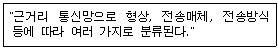
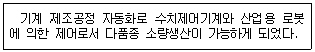

사무자동화산업기사 (2005-03-06 기출문제)
1과목: 사무자동화 시스템
1. 기업에서 많이 사용되고 있는 ERP는 다음 중 어떤 종류에 속하는가?
- 운영체제
- 데이터베이스 관리 시스템
- 응용 시스템(APPLICATION SYSTEM)
- 통신전용 소프트웨어
(정답률: 52%)

2. 컴퓨터에 중앙처리장치와 별도로 I/O를 위한 전용의 프로세서를 두는 가장 큰 이유는?(단, I/O 프로세서를 IOP라고 함)
- IOP가 제어신호를 잘 받을 수 있도록 한다.
- CPU가 입·출력을 제어해야 하는 부담을 덜어줌으로써 전체 처리속도의 향상을 가져온다.
- IOP가 입·출력에 관계되는 일을 CPU에게 지시할 수 있도록 하여 프로그램의 로드를 줄인다.
- 프로세서를 여러 개 두어 회로를 단순하게 한다.
(정답률: 88%)
3. 다음 네트워크의 설명은 무엇인가?

- ISDN
- LAN
- VAN
- ADSL
(정답률: 88%)
4. 정지 화상의 압축, 복원에 대한 알고리즘은?
- JPEG
- MPEG
- DDP
- FED
(정답률: 88%)
5. TCP/IP(Transmission Control Protocol/Internet Protocol) 상에서 네트워크 설정을 할 때 TCP/IP 등록정보에 해당하지 않는 것은?
- 도메인 네임(Domain Name)
- IP Address
- 게이트웨이(Gateway)
- URL(Uniform Resource Locator)
(정답률: 69%)
6. 데이터베이스 관리 시스템의 기능을 원활하게 수행하기 위하여 관리 책임을 지는 사람은?
- 응용 프로그래머
- 데이터베이스 관리자(DBA)
- 시스템 프로그래머
- 단말 사용자(end-user)
(정답률: 96%)
7. 다음 중 응용 프로그램(Application program)에 가장 가까운 것은?
- 성적처리 프로그램
- 정렬/병합 프로그램
- 제어 프로그램
- 감시 프로그램
(정답률: 72%)
8. 다음 중 인텔리전트 빌딩에서 요구되는 기본적인 기능과 가장 관계가 적은 것은?
- 정보통신 기능
- 생산관리 기능
- 정보처리 기능
- 빌딩자동화 기능
(정답률: 62%)
9. 데이터베이스의 논리적 구조에 해당되지 않는 것은?
- 망 구조(network structure)
- 계층 구조(hierarchical structure)
- 고리 구조(ring structure)
- 관계 구조(relational structure)
(정답률: 59%)
10. 전자우편 시스템의 주요기능으로 개인은 물론 그룹 혹은 선별된 다수인에게 복사, 중복된 문서의 작성없이 동시에 같은 내용을 편지로 보낼 수 있는 기능은?
- 동보 기능
- 시간별 전송기능
- 저장 및 열람기능
- 배달 증명기능
(정답률: 91%)
11. 사무자동화 기술에 대한 가장 포괄적인 정의라고 볼 수 있는 것은?
- 정보의 획득, 처리, 전달 및 보관에 관련된 기술
- 문서의 작성, 전달, 배포에 관련된 기술
- 사무실 공간의 효율적인 관리와 이용
- 사무조직에 관련된 기술
(정답률: 70%)
12. 가상기억장치에 대한 설명 중 옳지 않은 것은?
- 주기억장치의 용량의 한계를 보조기억장치를 이용하여 극복한다.
- 페이징 또는 세그먼트 기법을 사용한다.
- 주기억 장치와 보조기억장치가 계층 기억체제를 이룬다.
- 처리속도를 빠르게 하기 위한 것이다.
(정답률: 56%)
13. 다음 중 사무자동화의 목적으로 적당하지 않은 것은?
- 사무처리의 비용 절감
- 사무부분의 생산성 향상
- 사무처리의 질적 향상
- 사무원의 건강증진
(정답률: 93%)
14. 다음 중 사무자동화의 기대효과와 거리가 먼 것은?
- 조직의 최적화
- 생산성의 개선
- 부수적 기능(Shadow Function)의 증가
- 적시성(Timing)의 증가
(정답률: 85%)
15. 일반적인 화상 정보(2차원 정보)를 입력하는 방법으로 적당하지 않은 것은?
- 타블렛(디지타이저) 등을 이용하여 도형요소를 하나씩 입력한다.
- 화상의 입력에 비디오카메라를 사용할 수 있다.
- 스캐너를 이용하여 도면 등을 입력할 수 있다.
- 패턴인식기술을 이용한 OCR로 입력한다.
(정답률: 62%)
16. 사무자동화의 수행방식에 해당되지 않는 것은?
- 상향식 접근방식
- 하향식 접근방식
- 전사적 접근방식
- 효율적 접근방식
(정답률: 81%)
17. 다음 설명에 적합한 자동화 시스템은?

- HA - Home Automation
- OA - Office Automation
- FA - Factory Automation
- BA - Building Automation
(정답률: 88%)
18. 다음 중 오피스를 오피스 워크의 활동에 의해서 모델화하려는 방법은?
- SCOOP 모델
- FORM FLOW 모델
- OMEGA 모델
- OFFICE ACTIVITY 모델
(정답률: 83%)
19. 사무자동화의 환경개선이 주는 효과로서 알맞지 않은 것은?
- 사무기기의 고장시간(가동중단시간)의 감소
- 사무의 정확성 및 생산성의 증가
- 권태감 등의 감소로 작업자의 사기 증진
- 사무자동화기기 위주의 배려로 인한 창조력 향상
(정답률: 78%)
20. 월급계산을 컴퓨터를 이용하여 처리한다면 어떤 형태의 처리 시스템이 가장 적당한가?
- 실시간 처리(real time processing)
- 일괄처리(batch processing)
- 시분할 처리(time sharing processing)
- 분산처리(distributed processing)
(정답률: 85%)
2과목: 사무경영관리 개론
21. 효과적이고 효율적인 사무계획의 요건으로 볼 수 없는 것은?
- 타당성과 합리성
- 탄력성과 신축성
- 용이성과 실현가능성
- 주관성과 정확성
(정답률: 72%)
22. 다음 중 사무의 특성과 거리가 가장 먼 것은?
- 사무의 정보를 취급하고 정보의 기록과 관리를 한다.
- 사무란 경영활동인 생산, 판매, 구매, 재무 등을 연결짓는 역할을 한다.
- 사무란 조직목표를 달성하기 위해 의사결정에 필요한 다양한 정보수집, 처리, 전달, 보관 등의 기능을 관리한다.
- 사무란 환경의 변화에 대응한 문제의 발견과 해결을 위한 경영활동만을 말한다.
(정답률: 85%)
23. 테일러(Taylor)의 과학적 관리법과 직접적으로 관련이 없는 것은?
- 작업연구와 시간연구
- 지적 활동 중시
- 기능식 직장제
- 관리기능과 작업기능의 분리
(정답률: 57%)
24. 문서를 통한 의사전달의 특징을 가장 잘 나타낸 것은?
- 신속하게 전달할 수 있다.
- 상대의 반응을 신속하게 알 수 있다.
- 전달내용을 정확하게 전달할 수 있다.
- 비교적 세심한 감정까지 전달할 수 있다.
(정답률: 72%)
25. 사무자동화의 효과로 볼 수 없는 것은?
- 시설비 및 관리비 증가 효과
- 행정사무의 신속, 정확처리 효과
- 표준 서식을 사용함으로서 불편해소 효과
- 보존 공간 절약으로 주변, 사무실 환경개선 효과
(정답률: 82%)
26. 오피스 레이아웃(OFFICE LAYOUT)의 내용이 아닌 것은?
- 기기, 설비 등의 적절한 배치
- 구성원이 필요로 하는 기기, 설비 등의 크기와 위치 설정
- 기기의 유지ㆍ보수(maintenance)에 관한 계약
- 공간의 유기적인 활용 및 쾌적한 환경을 위한 활동
(정답률: 75%)
27. 조직의 기본 원칙 중 전문화의 원칙을 가장 잘 설명한 것은?
- 직속 상위자에게 명령을 받아야 하며 이는 조직의 능률성과 목표 통일에 있다.
- 명령계통과 의사소통의 효과를 증대시키기 위해 필요하다.
- 업무특성과 전문적인 기술, 지식에 적합한 상태에서 업무를 수행하게 한다.
- 조직목표를 원활하게 달성시킬 수 있도록 집단의 노력을 통합, 조정하여 균형을 이루게 한다.
(정답률: 75%)
28. 자료를 보관하는 기구로 바르게 묶여진 것은?
- 마이크로필름, 디스켓, 디스크
- 하이퍼미디어, 테이프, 팩시밀리
- 패키지, 레이저프린터, 워드프로세서
- 브라우저, Z-모뎀, 인터넷
(정답률: 84%)
29. EDI(Electronic Data Interchange)에 대한 설명 중 거리가 먼 것은?
- 표준화된 기업간 거래서식 또는 기업과 행정관청 사이의 행정서식을 합의된 통신표준에 따라 컴퓨터 간에 교환하는 전자식 데이터 교환시스템이다.
- E-mail이 일정한 형식이 없는 메시지를 교환하는데 비하여 EDI는 컴퓨터가 자동으로 판독할 수 있는 일정한 구조를 가진 메시지 형태의 서류를 교환한다.
- EDI는 독립적인 컴퓨터 시스템들 간의 신속, 정확한 정보교환 요구에서 생긴 것이다.
- EDI는 Computer to Computer 통신방식에 의한 정보의 재입력과 문서처리의 오류를 배제하지 못한다.
(정답률: 79%)
30. 실제의 실험이 불가능하거나 시간적, 경제적으로 어려움이 많은 경우 또는 해석적인 방법으로 해답을 구할 수 없는 경우에 대한 가상 모의실험은?
- Conversion
- Simulation
- Preparation
- Development
(정답률: 90%)
31. 사무실 배치의 일반적인 목표라고 할 수 없는 것은?
- 사무작업의 흐름이 효율적으로 수행되도록 한다.
- 사무실의 경제성을 높이고 사무원가가 저하될 수 있도록 고려한다.
- 사무원의 근로 의욕을 높일 수 있는 근무환경을 만들어야 한다.
- 업무의 성격이 표현되지 않도록 한다.
(정답률: 81%)
32. VDT 증후군은 주로 어느 사무환경에 의하여 기인되는가?
- 소음발생
- 공기조절 불량
- 배선고장
- 영상표시장치
(정답률: 84%)
33. 다음 중 사무의 효과적인 통제를 위한 도구 및 행위와 거리가 먼 것은?
- 감사
- 보고
- 환경
- 예산
(정답률: 53%)
34. 다음 중 EDI의 데이터형식, 용어, 규약 등의 국제적 표준을 정하는 국제기구는?
- ISO
- IEEE
- ITU
- OSI
(정답률: 66%)
35. 다음 중 사무개선의 목표와 거리가 가장 먼 것은?
- 용이성
- 신속성
- 다양성
- 경제성
(정답률: 66%)
36. 문서관리의 기본원칙과 거리가 먼 것은?
- 능률화와 절감화
- 표준화와 간소화
- 신속화와 정확화
- 전문화와 인쇄화
(정답률: 80%)
37. 프로그램 저작권에 관한 사항을 심의하고, 분쟁을 조정하기 위한 기구는?
- 한국전산원
- 프로그램심의조정위원회
- 통신위원회
- 정보화추진위원회
(정답률: 81%)
38. 다음 중 사무관리의 순환구조로서 가장 적절한 것은?
- 계획화 - 통제화 - 조직화
- 계획화 - 조직화 - 통제화
- 계획화 - 통제화 - 보고화
- 조직화 - 통제화 - 보고화
(정답률: 81%)
39. 원프로그램의 일련의 지시, 명령의 전부 또는 상당 부분을 이용하여 새로운 프로그램을 창작하는 것은?
- 복제
- 배포
- 개작
- 공표
(정답률: 75%)
40. 정보의 저장, 검색에 이용되는 마이크로필름시스템에 대한 설명으로 거리가 먼 것은?
- 고밀도기록이 가능하여 대용량화하기 쉽다.
- 검색시간이 매우 짧아 온라인처리에 적당하다.
- 기록내용을 확대하면 그대로 재현된다.
- 기록내용의 보존이 반영구적이라 할 수 있다.
(정답률: 68%)
3과목: 프로그래밍 일반
41. C 언어에서 사용하는 데이터형이 아닌 것은?
- long
- integer
- double
- float
(정답률: 86%)
42. 중위 표기법에 관한 설명으로 옳지 않은 것은?
- 연산기호는 두 피연산자 사이에 표현된다.
- 기계적으로 해석하기가 용이하다.
- 피연산자 수에 제한을 받지 않는다.
- 단항연산자에 대해서 적합하다.
(정답률: 59%)
43. 고급 언어(high level language)에 해당하지 않는 것은?
- Cobol
- C 언어
- Assembly어
- Fortran
(정답률: 79%)
44. 운영체제를 기능상 분류했을 때, 처리(processing) 프로그램에 해당하지 않는 것은?
- 감시 프로그램(supervisor program)
- 언어 번역 프로그램(language translator program)
- 문제 프로그램(problem program)
- 서비스 프로그램(service program)
(정답률: 54%)
45. 프로그램의 자료구조, 택일문 등을 확정하는 바인딩 시간은?
- 번역시간
- 실행시간
- 언어정의시간
- 언어구현시간
(정답률: 43%)
46. 소멸함수(destructor)의 역할에 대한 설명으로 옳은 것은?
- 특정 객체(object)가 종료하는 경우, 종료 처리를 행한다.
- 특정 객체의 요소함수(member function)가 다른 객체의 요소함수(member function)를 소멸시키는 경우에 사용된다.
- 특정 객체가 기동하는 경우, 초기화 처리를 행한다.
- 특정 객체의 소멸시에 다른 객체를 활성화시켜 준다.
(정답률: 40%)
47. 어휘분석(Lexical Analysis) 단계에서 주로 하는 일은?
- 구문 분석
- 파싱
- 기억장소 할당
- 토큰 생성
(정답률: 74%)
48. 프로그램 메인 루틴의 수행시에 서브루틴을 호출할 때는 활성 레코드(activation record)가 만들어진다. 이때 이 활성 레코드 안에 들어가는 정보가 아닌 것은?
- 파라미터(parameter)
- 국부 변수(local variable)
- 실행 코드(execution code)
- 복귀 주소(return address)
(정답률: 38%)
49. 블록 구조에 의한 영역 개념을 사용함으로써 얻어지는 장점으로 거리가 먼 것은?
- 변수를 사용할 프로그램의 문장 근처에서 선언하도록 하기 때문에 프로그램의 지역성(locality)을 높여준다.
- 프로그램 문장과 변수들의 지역성은 필요로 하는 기억장소의 크기를 작게 만들게 되며, 이는 운영체제의 working set을 크게 하는 장점이 있다.
- 프로그램의 변수명과 삽입되는 라이브러리 루틴의 변수명이 같더라도 문제점이 없게 된다.
- 프로그램의 구성을 단계적으로 세분화하는데 도움을 준다.
(정답률: 44%)
50. 의미 분석기의 기능으로 거리가 먼 것은?
- 매크로의 처리
- 오류의 탐지
- 암시정보의 제거
- 심볼 테이블의 유지
(정답률: 58%)
51. 인터프리터 언어에 해당하는 것은?
- FORTRAN
- ALGOL
- Ada
- BASIC
(정답률: 74%)
52. C 언어의 제어문 중 성격이 다른 것은?
- break문
- continue문
- goto문
- switch문
(정답률: 47%)
53. 특별한 정보는 갖고 있지 않으나, 판독성을 향상시키기 위하여 사용하는 구문 요소는?
- 핵심어
- 예약어
- 잡음어
- 연산식
(정답률: 58%)
54. C 언어의 연산자 중에서 오른쪽에서 왼쪽으로의 결합법칙을 따르지 않는 것은?
- sizeof
- <<
- !
- ++
(정답률: 60%)
55. 자료형 변환 중 widening에 해당하는 것은?
- 정수형을 실수형으로 변환
- 실수형을 정수형으로 변환
- 정수형을 문자형으로 변환
- 문자형을 실수형으로 변환
(정답률: 51%)
56. 부작용 현상(side effect)에 대한 설명으로 옳은 것은?
- 실행시간 단축의 효과를 말한다.
- 시분할 체제에서만 발생한다.
- 연산의 결과로 예상할 수 없을 정도로 다른 변수의 값이 변하는 경우를 의미한다.
- 함수형 언어에서도 부작용 현상이 발생한다.
(정답률: 76%)
57. 구조화 프로그래밍(structured programming)의 기본 구조에 해당되지 않는 것은?
- 순차 구조(Sequence structure)
- 선택 구조(Selection structure)
- 분기 구조(Branch structure)
- 반복 구조(Iteration structure)
(정답률: 72%)
58. 정적 바인딩에 해당하지 않는 것은?
- 번역 시간
- 링크 시간
- 실행 시간
- 언어 구현 시간
(정답률: 60%)
59. EBNF에서 { }을 사용하는 이유는?
- block을 나타내기 위해 사용한다.
- 생략 가능한 것을 나타내기 위해 사용한다.
- 반복되는 부분을 나타내기 위해 사용한다.
- 선택사항을 나타내기 위해 사용한다.
(정답률: 79%)
60. 절대 로더에서 기능과 그 행위 주체의 연결이 옳지 않은 것은?
- 할당 - 프로그래머
- 연결 - 로더
- 재배치 - 어셈블러
- 적재 - 로더
(정답률: 74%)
4과목: 정보통신 개론
61. 다음 네트워크 장비 중에서 OSI의 네트워크 계층까지의 기능을 수행하는 것은?
- 아답터
- 브리지
- 라우터
- 리피터
(정답률: 74%)
62. 다음 ITU 권고안 중 MHS에 대한 권고안은?
- X.25
- V.27
- X.400계열
- T.400계열
(정답률: 33%)
63. 다음 중 서로 관계가 올바르게 짝지어진 것은?
- 아날로그 데이터를 아날로그 신호로 변조 : PCM
- 디지털 데이터를 아날로그 신호로 변조 : FSK
- 아날로그 데이터를 디지털 신호로 변조 : DSU
- 디지털 데이터를 디지털 신호로 변조 : CODEC
(정답률: 57%)
64. 홀수패리티가 부가된 7비트 ASCII 코드 D(1000001)의 송신 데이터는?
- 1000010
- 0100001
- 10000011
- 11000010
(정답률: 55%)
65. 프로세스 간에 대한 연결을 확립, 관리, 단절시키는 수단을 제공하고, 동기제어 등을 수행하는 OSI 7 Layer의 계층은?
- Physical Layer
- Network Layer
- Data Link Layer
- Session Layer
(정답률: 46%)
66. 다음 중 뉴 미디어의 특징으로 관계가 가장 적은 것은?
- 정보교환의 고속화와 대용량화
- 다채널성과 쌍방향성
- 반도체와 아날로그 기술화
- 정보형태의 다양화
(정답률: 80%)
67. 정보통신 시스템의 회선종단장치(DCE) 중 디지털 신호를 아날로그 신호로 변환시켜 주는 장치는?
- DSU
- CCU
- MODEM
- PCM
(정답률: 62%)
68. 속도단위 [bps]의 가장 적합한 정의는?
- 1초간의 데이터 전송 비트 수
- 1초간의 신호 펄스의 발생 수
- 1분간의 신호 주파수 전송 수
- 1분간의 보(baud)의 2배 전송 수
(정답률: 77%)
69. 통신위성의 궤도 위치는 지구 적도 상공 몇[km] 정도인가?
- 500
- 6,600
- 14,000
- 36,000
(정답률: 64%)
70. LAN의 액세스 방식 중 ETHERNET에서 채택한 제어방식은?
- 랜덤(RANDOM) 방식
- CSMA/CD 방식
- 토큰패싱(Token passing) 방식
- 토큰링크(Token Link) 방식
(정답률: 77%)
71. 데이터 통신의 에러체크방식 중 수직패리티 체크방식이 우수 패리티방식을 채택할 경우, 1개 부호 중 수직에 대한 1의 bit수를 어떻게 하고 있는가?
- 홀수가 되도록 한다.
- 3의 배수가 되도록 한다.
- 짝수가 되도록 한다.
- 5개가 되도록 한다.
(정답률: 54%)
72. 전화와 텔레비전의 연결에 의한 정보서비스의 형태는?
- 비디오텍스(videotex)
- 텔레텍스트(teletext)
- 팩시밀리(fax)
- 텔렉스(telex)
(정답률: 55%)
73. 부가가치통신망(VAN)의 통신처리기능으로서 회선의 접속, 각종 제어절차 등의 데이터를 전송할 때 통신절차를 변환하는 기능은?
- 미디어변환
- 프로토콜변환
- 포맷변환
- 부호변환
(정답률: 74%)
74. 정보통신의 설명 내용으로 가장 적합하지 않은 것은?
- 전기통신과 컴퓨터의 정보처리 능력을 부가시켜 정보를 송·수신 처리하는 통신
- 컴퓨터나 통신기기 사이에서 디지털 형태로 표현된 정보를 송·수신하는 통신
- 전기적인 신호형태의 디지털 데이터만 컴퓨터로 송·수신하는 통신
- 정보처리장치 등에 의하여 처리된 정보를 전송하는 기계장치 간의 통신
(정답률: 80%)
75. 다음 중 근거리(LAN)통신망을 설치시 전송용량 측면에서 가장 좋은 케이블은?
- CCP 케이블
- 장하 케이블
- 광섬유 케이블
- 동축 케이블
(정답률: 74%)
76. HDLC의 데이터 전달모드가 아닌 것은?
- 표준 균형모드
- 정규 응답모드
- 비동기 균형모드
- 비동기 응답모드
(정답률: 48%)
77. 다음 중 PBX란 무엇을 의미하는가?
- 공공 구내교환 시스템
- 사설 구내교환 시스템
- 고속 네트워크 시스템
- 광역 네트워크 시스템
(정답률: 61%)
78. 각기 다른 LAN을 통합시켜 관련이 있는 기관과 상호 연결시킨 광역 통신망은?
- WAN
- PSTN
- VAN
- INTERNET
(정답률: 61%)
79. 다음 중 ISDN에 대해 바르게 설명한 것은?
- 아날로그 통신기술을 전제로 하고 있다.
- 음성, 비음성 데이터 서비스의 각 분야를 독립적으로 처리하는 통신망이다.
- 한 빌딩 내 또는 특정지역내의 복수의 컴퓨터, 워드프로세서 등을 접속하는 상호 통신망이다.
- 모든 통신서비스를 단일통신망으로 통합한 것이다.
(정답률: 57%)
80. 패킷교환망에서 데이터 터미널장치와 데이터 회선종단장치 간의 인터페이스에 관한 규정은?
- X.2
- X.25
- X.75
- SDLC
(정답률: 70%)